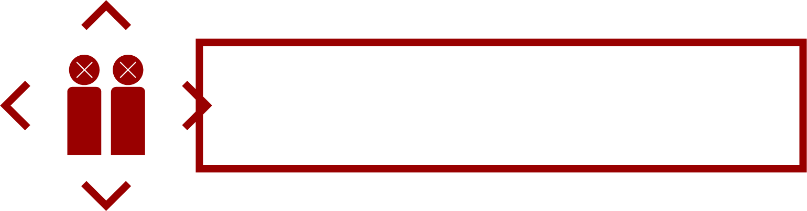
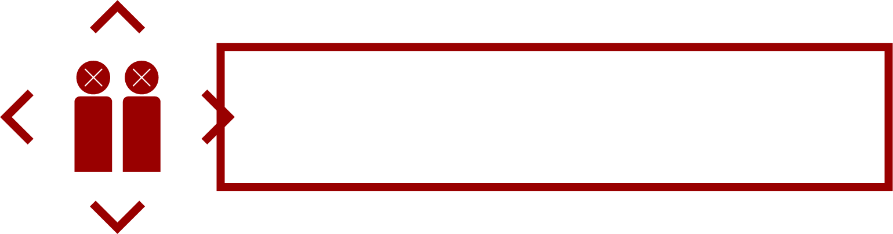

Made by Y.U
29.12.2016
Cháy giờ là cái gì đó quá là bình thường...
Năm 2016 là năm của những biến động chính trị, sự trỗi dậy của khủng bố và hàng loạt các thảm họa thiên nhiên. Việt Nam là một trong những nước may mắn khi không gặp và gánh chịu nhiều hậu quả từ các khủng hoảng trên. Tuy nhiên, những con số thống kê trong Hội nghị đánh giá thực trạng và đề xuất giải pháp đảm bảo an toàn PCCC của Bộ Công An tổ chức vào ngày 20/12/16 đã đưa ra những con số báo động về tình hình cháy, nổ trên cả nước.

 

Cháy chung cư Xa La
Khu đô thị Xa La - Hà Đông - Hà Nội cháy mái bể bơi nằm trên nóc của một tòa nhà 4 tầng
9h sáng, 29/11/2016 tại tòa chung cư CT 1A, CT 1B1 và CT 1B2
Cháy chung cư ở Linh Đàm
Tòa nhà Rainbow khu đô thị Linh Đàm (Hoàng Mai, Hà Nội) -tầng 8 của chung cư cao 21 tầng
23h30 ngày 31/10/2016
Nhiều khu chung cư chưa trú trọng đến vấn đề an toàn cháy nổ, ý thức của người dân trong sinh hoạt hàng ngày còn hạn chế. Những thói quen truyền thống vẫn còn tồn tại và là nguyên nhân chính dẫn đến các vụ cháy.
Không có thiệt hại về người, một số tài sản bị thiêu rụi
Vụ nổ khu Văn Phú
Vỉa hè đường Lê Trọng Tấn (khu đô thị Văn Phú, Hà Đông)
Khoảng 15h ngày 19/03/2016
Nguyên nhân: Sự thiếu hiểu biết về bom mìn của người dân.
Vụ cháy quán Karaoke trên đường Nguyễn Khang
Lửa xuất phát từ biển quảng cáo trên tầng 2, sau đó lan rộng 8 tầng quán Karaoke Gold địa chỉ 85G Nguyễn Khang, Yên Hòa, Cầu Giấy, Hà Nội
Khoảng 18h ngày 17/09/2016
Cháy quán karaoke 68 Trần Thái Tông
Hoả hoạn xảy ra lúc 13h30 ngày 01/11/2016
Sự buông lỏng của chính quyền về các hoạt động kinh doanh trái phép, không đảm bảo an toàn vận hành.
Quán Karaoke trên đường Nguyễn Khang không có thiệt hại về người, cả căn nhà cháy rụi; đến khoảng 23h đêm, đám cháy được dập tắt.
Quán karaoke 68 Trần Thái Tông 13 người chết, mặt tiền 4 ngôi nhà cùng nhiều tài sản bị thiêu rụi.
Các cơ quan chức năng cần phải kiên quyết xử lý các cơ sở, đơn vị, doanh nghiệp, cá nhân không đủ điều kiện an toàn PCCC và thoát nạn; tăng cường nâng cao nhận thức và tuyên truyền về PCCC trong các khu dân cư, vì một năm mới 2017 không có cháy nổ.